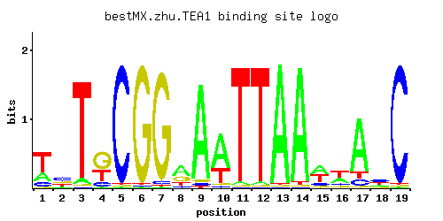

← All factors / TF RECORD
TEA1
YOR337W
Ty1 enhancer activator required for full levels of Ty enhancer-mediated transcription; C6 zinc cluster DNA-binding protein
01 / RECOMMENDED MATRIX
Best-performing DNA-binding model.

Fisher’s P-valueNo data
Information content19.53
Max PWM score19.18
Recommended cutoff14.39
View and copy the recommended matrices ↘
Position frequency matrix (PFM)
A | 0.23 0.16 0.05 0.02 0.01 0.01 0.01 0.50 0.93 0.65 0.02 0.02 0.97 0.96 0.42 0.32 0.79 0.18 0.01 C | 0.14 0.42 0.01 0.13 0.97 0.01 0.03 0.08 0.03 0.03 0.01 0.01 0.01 0.01 0.12 0.13 0.09 0.39 0.97 G | 0.04 0.23 0.02 0.53 0.01 0.97 0.95 0.27 0.03 0.04 0.01 0.01 0.01 0.01 0.08 0.12 0.03 0.17 0.01 T | 0.59 0.19 0.92 0.32 0.01 0.01 0.01 0.15 0.02 0.28 0.97 0.96 0.01 0.02 0.37 0.43 0.09 0.26 0.01
Position count matrix (PCM)
A | 23 16 5 2 1 1 1 50 93 65 2 2 97 96 42 32 79 18 1 C | 14 42 1 13 97 1 3 8 3 3 1 1 1 1 12 13 9 39 97 G | 4 23 2 53 1 97 95 27 3 4 1 1 1 1 8 12 3 17 1 T | 59 19 92 32 1 1 1 15 2 28 97 96 1 2 37 43 9 26 1
Position weight matrix (PWM)
A | -0.33 -0.69 -1.86 -2.77 -3.47 -3.47 -3.47 0.45 1.07 0.71 -2.77 -2.77 1.11 1.10 0.27 0.00 0.90 -0.58 -3.47 C | -0.25 0.85 -2.89 -0.33 1.68 -2.89 -1.79 -0.81 -1.79 -1.79 -2.89 -2.89 -2.89 -2.89 -0.41 -0.33 -0.69 0.77 1.68 G | -1.50 0.25 -2.20 1.08 -2.89 1.68 1.66 0.41 -1.79 -1.50 -2.89 -2.89 -2.89 -2.89 -0.81 -0.41 -1.79 -0.06 -2.89 T | 0.61 -0.52 1.06 0.00 -3.47 -3.47 -3.47 -0.76 -2.77 -0.13 1.11 1.10 -3.47 -2.77 0.15 0.30 -1.27 -0.21 -3.47
02 / COMPARATIVE BENCHMARKS
Alternative candidate matrices 2
Historical matrix candidates from the original ScerTF database. Expand a source to inspect its original logo, scores, and matrix values.
TEA1Badis et. al.P = No dataView matrix ↘
TEA1Zhao and StormoP = No dataView matrix ↘
03 / EXPERIMENTAL CONTEXT
Gene-level annotations and interactions.
Genes bound in ChIP-chip experiments 1 genes
No Data
Genes affected by TF deletion 1 genes
No Data
Genes supported by both experiments 1 genes
No Data